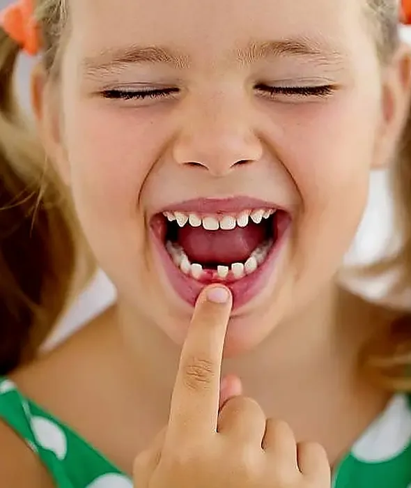

Primeira consulta
Quando nasce o primeiro dente ou até 1 ano de idade, para conhecer o consultório e começar a prevenção.
Da primeira consulta à dor de dente fora de hora: a equipe atende a criança no tempo dela, explica cada passo de um jeito simples e orienta os pais sobre os cuidados em casa.
Plantão aberto todos os dias, inclusive de madrugada e no fim de semana.

Dr. Carlos Martins✓
Cirurgião-Dentista · CRO-CE 10625
Responsável técnico
 ★★★★★4,9 no Google
★★★★★4,9 no Google
Quanto antes a criança conhece o dentista, mais tranquilo fica o cuidado com os dentes ao longo da vida.
Quando nasce o primeiro dente ou até 1 ano de idade, para conhecer o consultório e começar a prevenção.
Consultas de rotina para acompanhar os dentes, orientar a escovação e avaliar flúor ou selante quando indicado.
Mancha escura, buraco ou dor ao comer doce. O dente de leite também precisa ser tratado.
Queda, pancada ou dente que escureceu depois de uma batida. Guarde o pedaço e fale com a equipe.
Dor ou inchaço à noite, no fim de semana ou no feriado. O plantão atende crianças a qualquer hora.
Chupeta, sucção do dedo e o nascimento dos dentes permanentes merecem acompanhamento.
Seu filho está com dor agora? O plantão 24h atende crianças a qualquer hora.
Falar no WhatsAppUm caminho simples, explicado em cada etapa.
Conte a idade da criança e o que está acontecendo. A equipe orienta o melhor horário.
A criança conhece o consultório e o dentista examina com calma, no tempo dela.
Cada etapa é explicada de forma simples antes de começar, com você por perto.
Você sai com dicas de escovação e alimentação e sabe quando voltar para revisão.
Orientações gerais. O dentista ajusta cada uma à idade e ao jeito do seu filho.
Evite usar a consulta como ameaça ou prometer que nada vai acontecer. Diga que o dentista vai contar e cuidar dos dentes.
Prefira um horário em que a criança não esteja com sono ou com fome.
Escove os dentes da criança ao menos duas vezes ao dia, com a quantidade de creme dental indicada para a idade.
Conheça outros atendimentos da Dentalli.
Dor de dente a qualquer hora, todos os dias.
Saiba mais →Avaliação e planejamento antes de extrair.
Saiba mais →Cuida da polpa inflamada e preserva o dente.
Saiba mais →Com avaliação e acompanhamento.
Saiba mais →Ajustes de cor, formato e espaços.
Saiba mais →Reposição fixa de dentes perdidos.
Saiba mais → Avaliações no Google da Rede Dentalli
Avaliações no Google da Rede Dentalli
“Meu atendimento com Dr. Carlos tem sido muito excelente, desde o primeiro momento. Super indico!”
“Excelente profissional! Atendimento atencioso, cuidadoso e muito competente. Recomendo demais.”
“Ótimo profissional! Atencioso, com esmerada ética e capacidade em solucionar os mais variados entraves odontológicos!”
O ideal é marcar a primeira consulta quando nasce o primeiro dente ou até 1 ano de idade. Assim a criança conhece o consultório antes de ter algum problema.
Sim. Um responsável pode ficar junto durante todo o atendimento, o que costuma deixar a criança mais segura.
Sim. A equipe vai no tempo da criança, explica cada passo antes de fazer e não força o atendimento. Às vezes a primeira consulta serve só para conhecer o consultório.
Sim. O plantão 24h atende crianças à noite, de madrugada, no fim de semana e no feriado. Avise pelo WhatsApp ou ligue antes de sair de casa.
Sim. O dente de leite ajuda na mastigação, na fala e guarda o espaço do dente permanente. Uma cárie sem tratamento pode causar dor e infecção.
O valor é informado depois da avaliação, porque depende do que a criança precisa.
Sim. O atendimento é particular e a clínica não atende convênio.
Fale com a equipe pelo WhatsApp ou ligue para (85) 99260-4260. O plantão 24h atende crianças a qualquer hora, todos os dias.